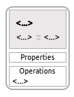

Adding an Operation
This is how a new Operation added to a
TaskContext looks like:

The easiest way to add a Operation or any other model
element is to select, drag and drop the element from the
Palette to a TaskContext in the diagram.

- Select Operation from the Palette.
- Drag the Operation over the TaskContext
and drop.
- Select the TaskContext.
- Select the Operation.
- Open the Properties View.

- Select the Value cell for
Description and type the optional description for
the Operation.
- Select the Value cell for Name and type
the name for the Operation.
- Select the Value cell for Type and
select the type of the Operation from the drop down
list.
- Save your work.